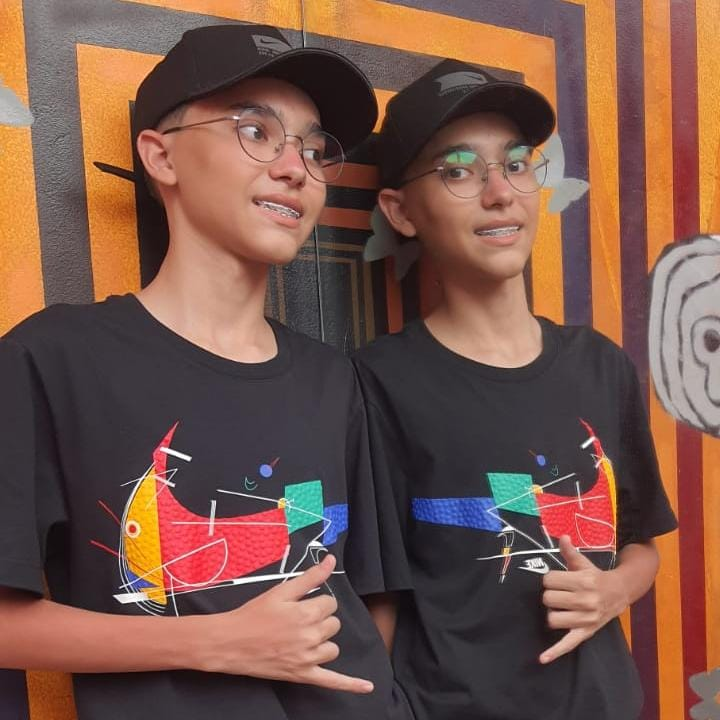
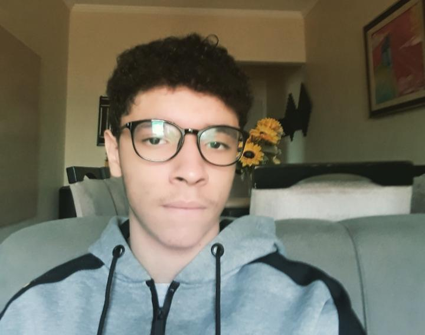

Conheça um pouco mais sobre cada aluno que participou desse projeto.

Este é Enzo Akira, ou “Japa”, para os íntimos, fez parte da equipe de programação e ajudou no desenvolvimento da estrutura do site.
Este é Gustavo, ou “Gugu”, para os íntimos, fez parte da equipe de programação e ajudou no desenvolvimento da estrutura do site.
Este é Guilherme, ou “Titã”, para os íntimos, fez parte da equipe de programação e ajudou no desenvolvimento da estrutura do site.

Esta é Clara, ou “Clarita Diet”, para os íntimos, é a líder e fez parte da equipe de pesquisa e processo criativo.
Este é Antonio, ele fez parte da equipe de ideias e pesquisas.
Obs.: Sim, é Antonio sem acento.
Esta é Mariana, ou Mari, para os íntimos. Ela fez parte da equipe de pesquisa de Tags.
Este é Renan, ajudou na pesquisa das Tags de JavaScript e CSS.
Este é Enzo Cassaneli, ou "Heleno Brian”, para os íntimos, ajudou no processo criativo da logo do site.
Este é Patrick, ou Dono do Canal Tradicional, para os íntimos. Fez parte da equipe de pesquisa de Tags.
Professores
Conheça um pouco mais sobre cada Professor que participou desse projeto.